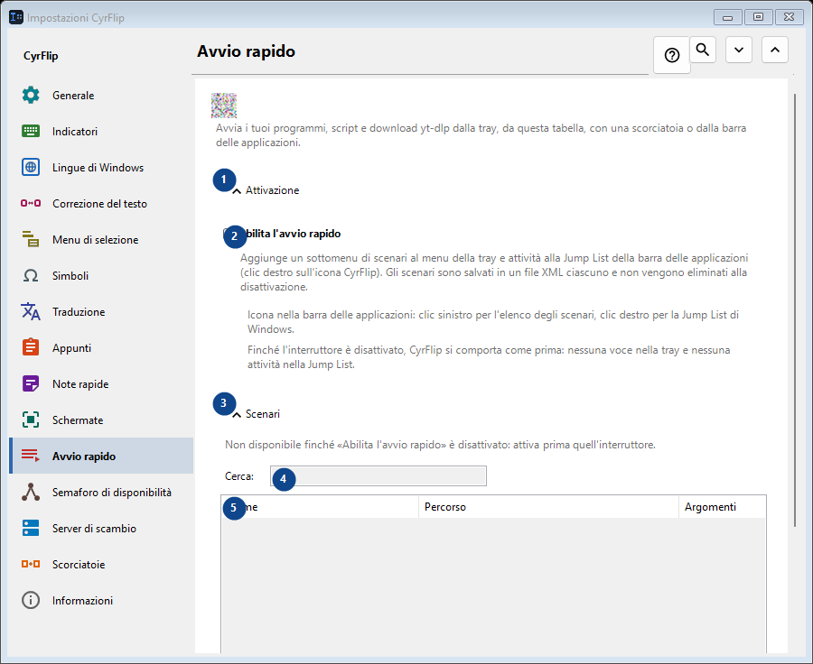
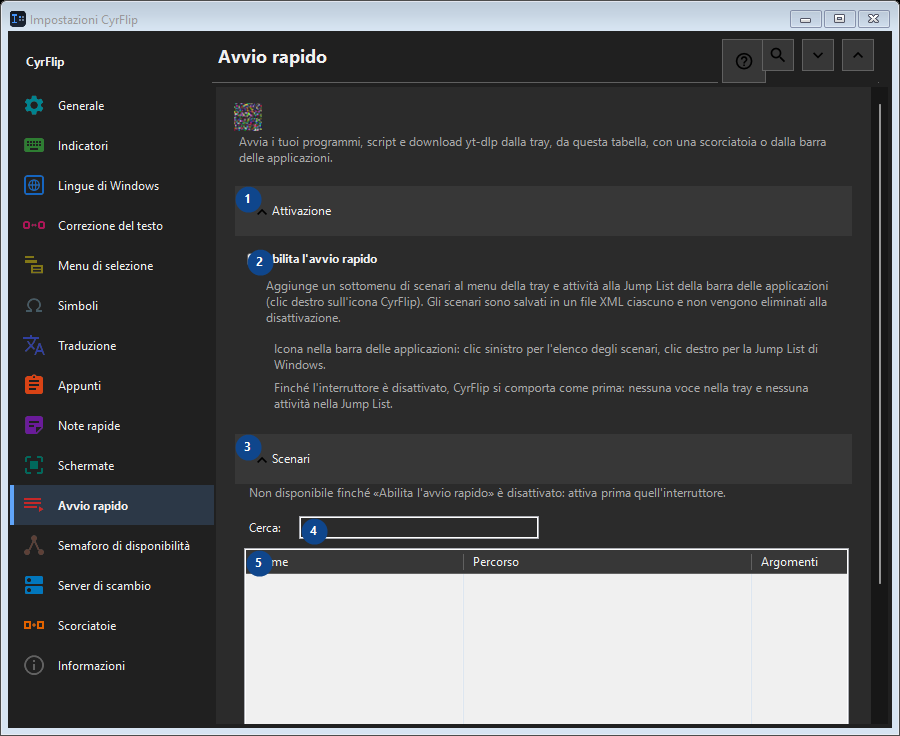

Avvio rapido
A cosa serve
Avvia i tuoi programmi, script e download yt-dlp dalla tray, da questa tabella, con una scorciatoia o dalla barra delle applicazioni.


Ordine delle operazioni
Le impostazioni si applicano subito. Non serve un ordine preciso; usa i gruppi qui sotto.
Elementi
1. Attivazione
Usa questo comando per l’azione indicata. Leggi ogni richiesta di conferma prima di accettare.
Le tue scorciatoie2. Abilita l'avvio rapido
Aggiunge un sottomenu di scenari al menu della tray e attività alla Jump List della barra delle applicazioni (clic destro sull'icona CyrFlip). Gli scenari sono salvati in un file XML ciascuno e non vengono eliminati alla disattivazione.
Le tue scorciatoie3. Scenari
Usa questo comando per l’azione indicata. Leggi ogni richiesta di conferma prima di accettare.
Le tue scorciatoie4. Cerca
Non disponibile finché «Abilita l'avvio rapido» è disattivato: attiva prima quell'interruttore. Questo elemento non è disponibile. Attiva prima la funzione o seleziona una voce.
Le tue scorciatoie5. Avvio rapido
Non disponibile finché «Abilita l'avvio rapido» è disattivato: attiva prima quell'interruttore. Questo elemento non è disponibile. Attiva prima la funzione o seleziona una voce. Nome / Percorso / Argomenti / Cartella di lavoro / Admin / Scorciatoia
Le tue scorciatoie6. Aggiungi...
Non disponibile finché «Abilita l'avvio rapido» è disattivato: attiva prima quell'interruttore. Questo elemento non è disponibile. Attiva prima la funzione o seleziona una voce.
Le tue scorciatoie7. Modifica...
Non disponibile finché «Abilita l'avvio rapido» è disattivato: attiva prima quell'interruttore. Questo elemento non è disponibile. Attiva prima la funzione o seleziona una voce.
Le tue scorciatoie8. Esegui
Non disponibile finché «Abilita l'avvio rapido» è disattivato: attiva prima quell'interruttore. Questo elemento non è disponibile. Attiva prima la funzione o seleziona una voce.
Le tue scorciatoie9. Clona
Non disponibile finché «Abilita l'avvio rapido» è disattivato: attiva prima quell'interruttore. Questo elemento non è disponibile. Attiva prima la funzione o seleziona una voce.
Le tue scorciatoie10. Elimina
Non disponibile finché «Abilita l'avvio rapido» è disattivato: attiva prima quell'interruttore. Questo elemento non è disponibile. Attiva prima la funzione o seleziona una voce.
Le tue scorciatoie11. Sposta su
Non disponibile finché «Abilita l'avvio rapido» è disattivato: attiva prima quell'interruttore. Questo elemento non è disponibile. Attiva prima la funzione o seleziona una voce.
Le tue scorciatoie12. Sposta giù
Non disponibile finché «Abilita l'avvio rapido» è disattivato: attiva prima quell'interruttore. Questo elemento non è disponibile. Attiva prima la funzione o seleziona una voce.
Le tue scorciatoie13. Esporta...
Non disponibile finché «Abilita l'avvio rapido» è disattivato: attiva prima quell'interruttore. Questo elemento non è disponibile. Attiva prima la funzione o seleziona una voce.
Le tue scorciatoie14. Importa...
Non disponibile finché «Abilita l'avvio rapido» è disattivato: attiva prima quell'interruttore. Questo elemento non è disponibile. Attiva prima la funzione o seleziona una voce.
Le tue scorciatoie15. Importa da OneClickRunner...
Non disponibile finché «Abilita l'avvio rapido» è disattivato: attiva prima quell'interruttore. Questo elemento non è disponibile. Attiva prima la funzione o seleziona una voce.
Le tue scorciatoie